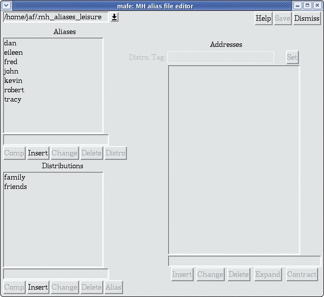
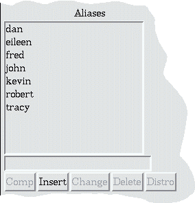
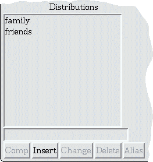

MAFE is a Perl+Tk utility which manipulates the nmh alias file(s). It can add email aliases, delete them and change them. It is similar in style to aliases.tcl by Brent Welch and Scott Stanton in the standard exmh package, but has a little more functionality. Unfortunately, my TCL+TK knowledge is limited and it would have taken me too long to learn the language to do what I wanted to do, so I've used what I know: Perl. However, if anyone wishes to convert this to Tcl, they are most welcome. This is not meant to critize aliases.tcl by any means. Indeed, aliases.tcl is much faster than mafe and is native to exmh (whereas mafe needs to be called via exec, see below).
mafe uses two features of nmh alias file(s) which is not currently exploited in the exmh alias editor:
As mentioned above, the nmh
file can take one of two basic forms:
| 1: | name: {list} |
| 2: | name: tag:, {list}, ; |
Presently, there is no "installation" procedure (such as compiling or rpm-ing). Simply place uncompress the mafe tar file into a directory seen by the PATH variable. Mafe also comes with script called exmhmail (which should also be visible to the PATH environment) which launches a compose session in exmh.
To add mafe to exmh, add the following to the beginning of exmh-defaults
|
*Main.addr.text: Address... *Main.addr.m.entrylist: alias alias2 addr *Main.addr.m.l_alias: MH Aliases *Main.addr.m.c_alias: Aliases_Pref *Main.addr.m.l_alias2: MH Alias File Editor (MAFE) *Main.addr.m.c_alias2: exec /path to mafe/mafe \$address & *Main.addr.m.l_addr: Address Book *Main.addr.m.c_addr: Addr_Browse |
The program mafe can be called from within exmh (as
described above) or can be called on its own via
mafe address
where address will appear in the Addresses' Entry Box(see below).
When it first starts, mafe first reads $HOME/.exmh/exmh-defaults to obtain which fonts are used by exmh. Next, it reads the file $HOME/.mh_profile and looks for the alias file names given in the line starting with AliasFile:. It then proceeds to open the first alias file mentioned on that line.
A screen shot of mafe is given below.

In the upper right
corner are several buttons whose meaning is pretty much
self-explanatory.
The name of the nmh alias file is displayed at the
upper left.
If there are more than one nmh alias (as specified in
.mh_profile) then the label is replaced with a pull down
combo-box to switch between different files. Note: if a change
has been made to an alias file and has not been saved, then either
selecting a different alias file or
clicking the Dismiss dismiss button will result in the user to
be prompted to save the file first.
Left Side: On the left hand side of the window there are two nearly-identical
units above one another. Each unit contains: a list box, an entry box and a row of
buttons. With the exception of the last button in each set, all look
the same. The upper unit is reserved for aliases (as defined in the
Introduction) while the lower unit is reserved
for the distributions (again, as defined in the
Introduction).
|  |  |
| Alias unit (upper). | Distribution unit (lower). |
The following lists a few issues with mafe